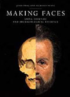

| |

Featured Book
Making Faces - Using Forensic and Archaeological Evidence
“John Prag and Richard Neave are the leading practitioners in the art of the ultimate jigsaw – the painstaking business of taking a skull and putting the flesh back… We have seen the surface of the moon…now gaze on faces that have not been seen for a millennia or more.” – Sunday Times

John Prag and Richard Neave ISBN: 0 7141 2715 9
Buy |
|
Here is a suggested bibliography concerning time, its concept and measurement across cultures.
General
- Duncan, D. E. The Calendar. Fourth Estate, 1998
- Toulmin, S. & Goodhead, J. The Discovery of Time. University of Chicago Press, 1999
- Walker, C. (ed.) Astronomy before the telescope. BMP, 1996
Ancient Babylon
- Brown, D. & Fermor, J. & Walker, C. The Water Clock in Mesopotamia. Archiv für Orientforschung, Horn (forthcoming)
- Englund, R. K. Administrative Timekeeping in Ancient Mesopotamia. Journal of Economic and Social History of the Orient 31, 121-185, 1988
- Neugebauer, O. The Water Clock on Babylonian Astronomy. Studies in Ancient Astronomy VIII, Isis 37/1-2, nos 107-108, 37-43, 1947
- Rochberg, F. The rising times of the zodiac and the length of daylight in Babylonian astronomy. Journal for the History of Astronomy 27, Cambridge, 1996
- Walker, C. Astronomy and Astrology in Mesopotamia. BMP, 1996 (especially pp. 42-67)
Ancient Egypt
- Neugebauer, O. Exact Sciences in Antiquity. Brown University Press (2nd ed), 1957 - reprinted by Harper, 1962
- Harris, J. R. (ed.) Legacy of Egypt. Oxford University Press, 1971
Greece and Rome
- Bickermann, E. J. Chronology in the Ancient World. 1967 - revised 1980
- Michels, K. The Calendar of the Roman Republic. 1967
- Salzman, M. R. On Roman Time. The Codex-calendar of 354 and the Rhythms of Roman Time in Late Antiquity. 1990
- Cornell, T. & Matthews, J. Atlas of the Roman World. 1982
The Islamic World
- King, D. Islamic Astronomy.
- King, D. Mikat: Astronomical Timekeeping. The Encyclopaedia of Islam 7, Brill, 1990 Reprinted as Chapter V in King, D. Astronomy in the Service of Islam Variorum, 1993
Ancient China
- Needham, J. et al Heavenly Clockwork: the Great Astronomical Clocks of Medieval China. Cambridge (2nd ed), 1986
- Wilkinson, E. Chinese History: a Manual. Harvard, 1998 (especially Telling the time, pp 199-223)
Europe
- Burton, E. The History of Clocks and Watches. Orbis, 1979
- Britten, F. J. Old clocks and Watches and their makers. Metheun (9th ed), 1982
- Landes, D. Revolution in Time. Harvard University Press, 1983
|
|


The Chaucer astrolabe.
The earliest dated European astrolabe. England, AD 1326
|